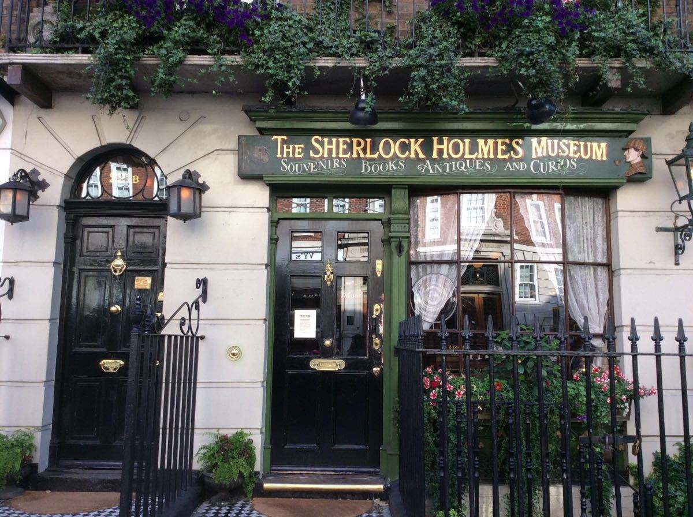

Tower Bridge Night
Tower Bridge Evening
Tower Bridge Morning
As one of the landmark buildings of London,
Tower Bridge is an opening bridge across the Thames,
named for being near the Tower of London
Tower Of Bridge
It is a symbol palace, fortress, located on the Thames River.
James I was the last ruler to live in the palace.
In 1988, it was listed as a World Heritage Site.
SherlockHolmesMuseum
MuseumFrontDoor

SherlockHolems
Sherlock
The Sherlock Holems Museum is a popular private museum that
salutes Sir Conan fictional character Sherlock Helomes.
The museum, located in Baker Street,opened in 1990. The layout
and furnishings of the museum are based on the plot mentioned in the novel,
adding to the authenticity of Holmes' old residence.
Windsor Castle
Windsor Castle
One of the Queen's official residences and the largest inhabited castle in the world.
The current Queen often live here and perform various official
and private activities. Whenever the queen is in the castle,
the royal flag is raised. Windsor Castle is divided into the upper,
middle and lower three districts, including banquet hall, doll house and
other palace furnishings. The central district has a round tower surrounded by rose gardens,
and the lower district has Gothic St.George's Church and so on.
THANKS!